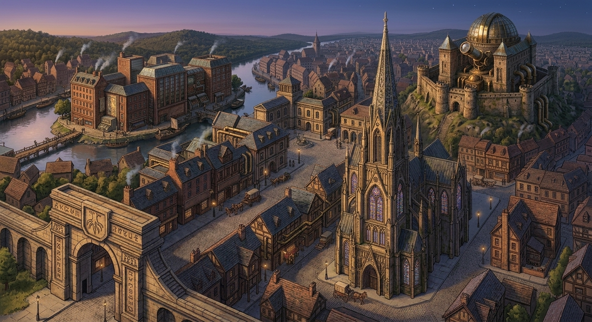
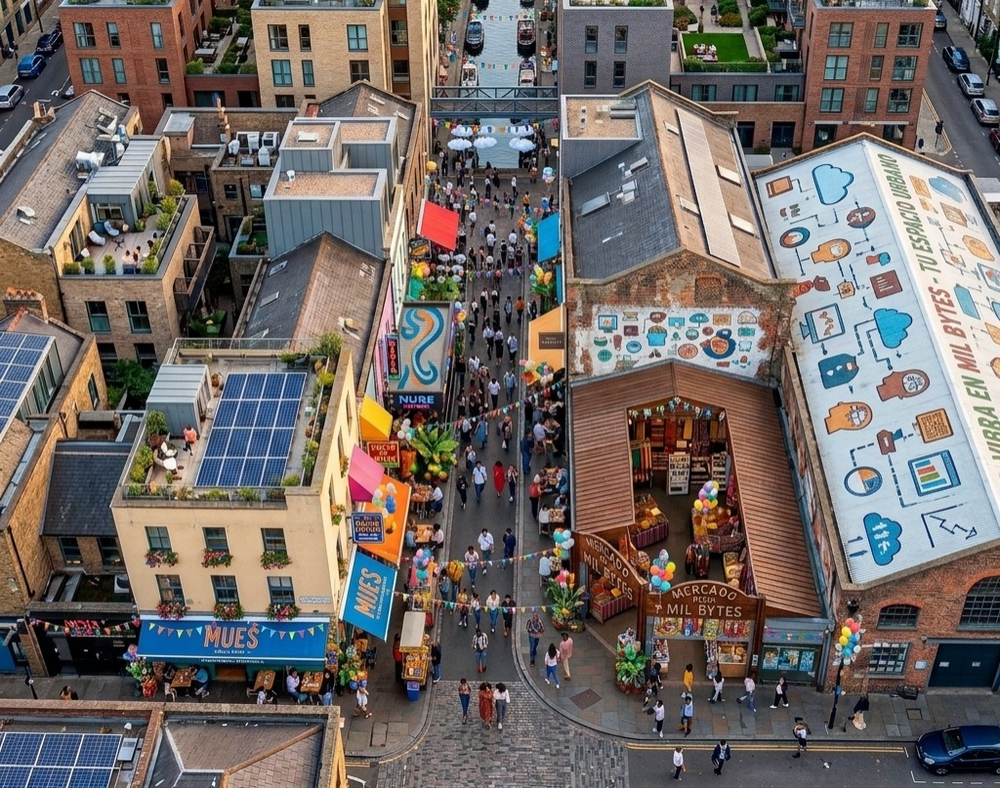

Westview, donde cada lugar tiene su propia identidad
Root City
Root City es el corazón histórico de Westview. Su nombre viene de la cuenta «root», la raíz de todo el sistema, y concentra los monumentos, museos y edificios más antiguos de la ciudad.

¿Qué se puede hacer?
- Visitar la Puerta del Kernel, el arco de piedra que marca la entrada al casco histórico.
- Conocer el Parlamento de Sokovia.
- Recorrer la Isla de los Museos del Código.
- Visitar la Catedral del Compilador.
- Caminar por la Avenida Sudo, la más conocida de la ciudad.
¿Por qué se recomienda visitarlo?
Es ideal para conocer la historia, la arquitectura y la cultura de Westview en un solo lugar, con casi todos los atractivos a pocas cuadras.
Villa Terrabyte
Villa Terrabyte es el barrio más grande, popular y multicultural de Westview. Se caracteriza por sus restaurantes internacionales, sus bares y su población muy diversa.

¿Qué se puede hacer?
- Recorrer la calle Pixel, llena de locales y música.
- Visitar el Mercado de los Mil Bytes.
- Descubrir espacios culturales y talleres abiertos.
- Pasear por el canal de la Nube.
- Disfrutar de bares y locales de música en vivo.
¿Por qué se recomienda visitarlo?
Es una buena opción para conocer el lado más joven, diverso y gastronómico de la ciudad.
Muro del Firewall
El Muro del Firewall es un barrio de ambiente joven, vida nocturna y mucho arte callejero. Conserva el antiguo muro que protegía la ciudad, hoy cubierto de murales.

¿Qué se puede hacer?
- Recorrer la Galería del Muro, un tramo del antiguo firewall decorado con murales.
- Pasear junto al río Binario.
- Visitar bares como Puerto 80, restaurantes y clubes.
- Oportunidad de comprar objetos artesanales en la feria de la peatonal.
- Participar de mercados y actividades culturales.
¿Por qué se recomienda visitarlo?
Es uno de los mejores lugares para ver cómo la historia defensiva de Westview se mezcla con su cultura contemporánea.
Puerto de Teseo
El Puerto de Teseo es un barrio de calles tranquilas junto al agua, con cafés, restaurantes y espacios verdes. Su nombre recuerda a los barcos del puerto, reparados pieza por pieza hasta renovarse por completo.

¿Qué se puede hacer?
- Caminar por el muelle y observar los barcos.
- Visitar el Parque del Faro.
- Recorrer los mercados locales del puerto.
- Disfrutar de cafés y restaurantes con vista al río.
- Participar de las actividades del parque, especialmente los fines de semana.
¿Por qué se recomienda visitarlo?
Es recomendable para quienes buscan una parte más tranquila y cotidiana de Westview, lejos de las zonas más turísticas.
Valle del Hex
El Valle del Hex es una de las zonas más elegantes de Westview. Se caracteriza por sus edificios históricos, tiendas, restaurantes y espacios culturales. Su nombre viene del sistema de numeración en base 16 que decora fachadas y plazas.

¿Qué se puede hacer?
- Visitar el Palacio #FF5733 y sus jardines.
- Recorrer la avenida 0xFF, conocida por sus tiendas.
- Visitar museos y espacios culturales.
- Conocer la Iglesia Memorial del Primer Programa.
- Disfrutar de restaurantes y cafeterías.
¿Por qué se recomienda visitarlo?
Es una zona interesante para combinar historia, arquitectura, cultura y compras. El Palacio #FF5733 es uno de los principales atractivos de la ciudad.
Si querés saber más sobre este sistema de numeración, mirá el sistema hexadecimal en Wikipedia.